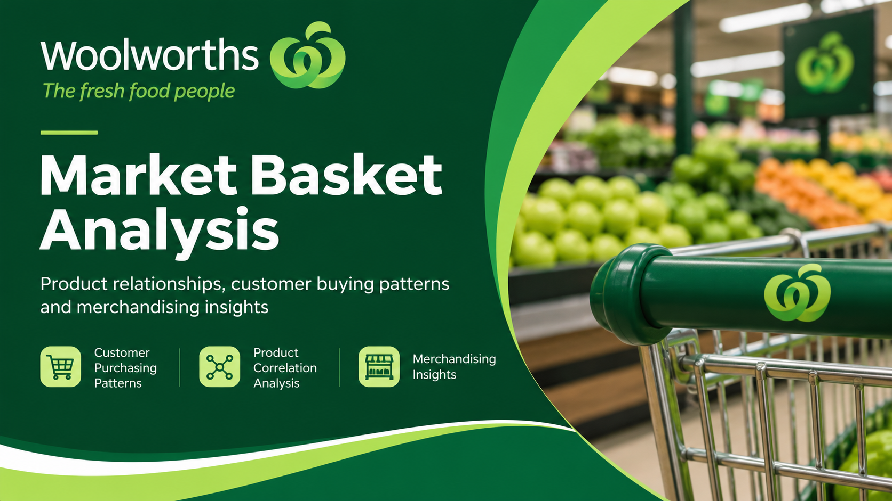

Woolworths Market Basket Analysis
Exploring purchasing relationships across 8,902 grocery transactions to identify opportunities for cross-selling and data-driven merchandising.

Understanding what customers buy together.
Market basket analysis helps retailers understand which products are frequently purchased together and how these relationships can inform merchandising and promotional decisions.
This project analysed 8,902 grocery transactions using Microsoft Excel to explore purchasing relationships between product categories and identify potential cross-selling opportunities.
Grocery transaction dataset used to explore purchasing behaviour.
Examined relationships between product categories using Excel.
Identified potential opportunities for merchandising and cross-selling.
Turning transaction data into retail decisions.
Grocery retailers manage a wide range of products, but individual sales totals do not reveal which items customers purchase together.
Understanding these relationships can help inform product placement, bundled promotions, and complementary product recommendations.
From raw transactions to purchasing patterns.
Organised grocery transaction data into a format suitable for analysing product purchasing relationships.
Used Excel to examine the strength of relationships between selected product categories.
Compared product relationships and translated findings into potential retail business applications.
Top Correlated Pairs
Correlation values are shown as supplied in the earlier project reference. Verify these figures against your original Excel workbook before presenting them as final results.
Translating patterns into opportunities.
Test complementary product recommendations, such as pasta with pasta sauce, to encourage additional purchases.
Evaluate whether positioning related products closer together improves customer convenience and purchasing behaviour.
Explore targeted bundles for commonly associated product categories and measure their impact on basket size.
Explore the analysis.
The Excel workbook contains the underlying analysis used to explore product purchasing relationships and identify correlated pairs.
Workbook link will be added once the Excel file is uploaded to the repository.